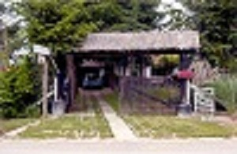
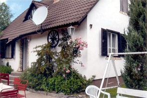
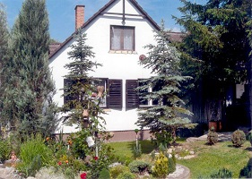
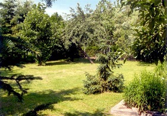

Kiadó nyaraló Mátrában
Mátraszentimre csendes részén, üdülőövezetben nyaraló kiadó.
Jellemzők
- 350 négyszögletes parkosított kert
- téglaépítésű ház
- téliesített gázkonvektoros fűtés
- négy db kétágyas szoba
- nappali, étkező, konyha, fürdő
- kocsibeálló négy autó részére
Telefon: +36 10 11-22-33
+36 10 11-22-33e-mail: kiado@matrai-haz
Részletes leírás és képek:
A ház lenzi részén találhatóak a közös helyiségek, és a két szoba. Az emeleten helyezkedik el további két szoba. Minden szobában két ágy található. Ágyneműt és törölkökőt biztosítunk. Az étkezőben 8 személyes asztal áll, a konyhában 8 fő részére található étkészlet.
|  |  |  |  |
A ház legalább két éjszakára foglalható, rövidebb időre nem!
Áraink:
7 éjszakánál hosszabb tartózkodás esetén kérje egyedi ajánlatunkat!
Programajánló
- 10 túra a Felső-Mátrába
- Kirándulástippek a Mátrába
- Adrenalin Park Mátrafüred